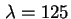
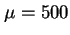
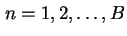
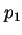
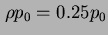
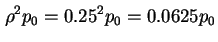
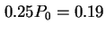
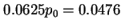

, ,  ,
,
| (5.50) |
สำหรับ
 จะได้ 
|  |  | ||
|  | (5.51) |
และสามารถหาความน่าจะเป็นที่ระบบว่างจากงาน เท่ากับ
| (5.52) |
| (5.53) |
| (5.54) |
แทนค่า  ลงใน
ลงใน  จะได้
จะได้
|  | |||
|  | (5.55) |
ค่าเฉลี่ยของจำนวนงานในระบบเท่ากับ
| (5.56) |
ค่าเฉลี่ยของจำนวนงานรอในคิวเท่ากับ
| (5.57) |
อัตราการเข้าใช้งานระบบจริงสามารถคำนวณได้จาก
| (5.58) |
และ
| (5.59) |
ค่าเฉลี่ยของเวลาตอบสนองเท่ากับ
| (5.60) |
ค่าเฉลี่ยของเวลารอคอยในคิวเท่ากับ
| (5.61) |